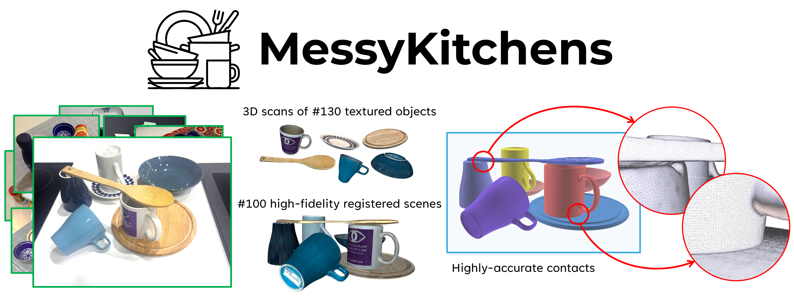
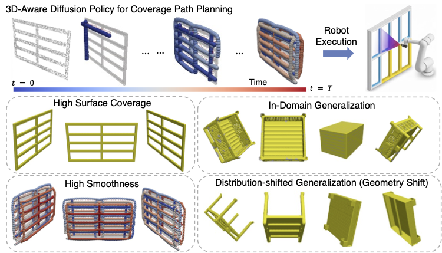
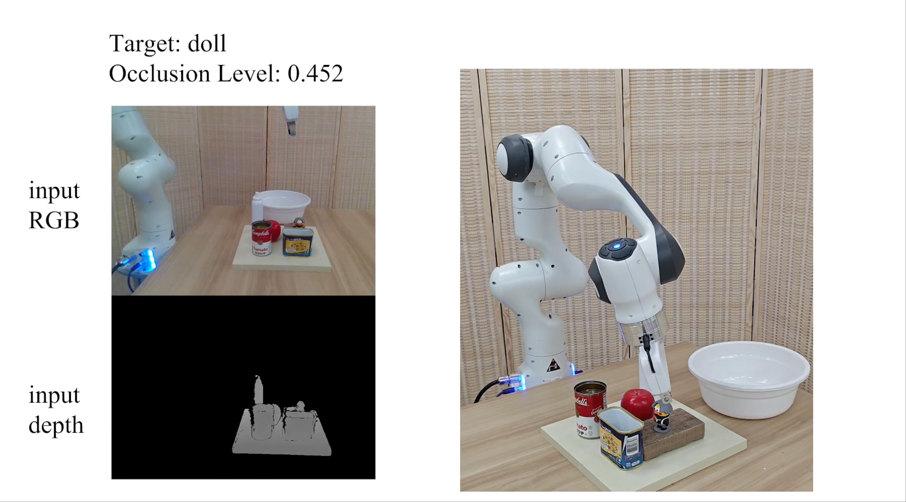
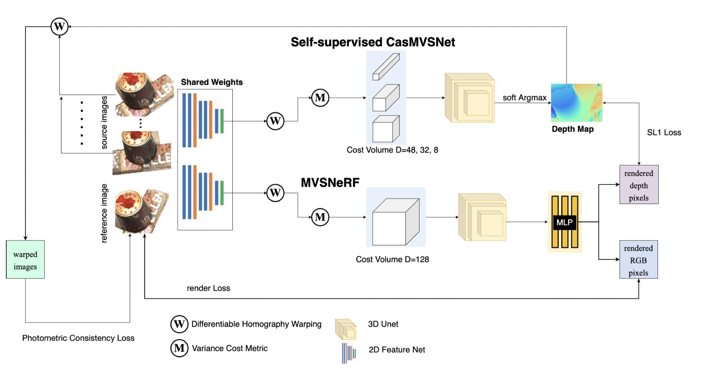
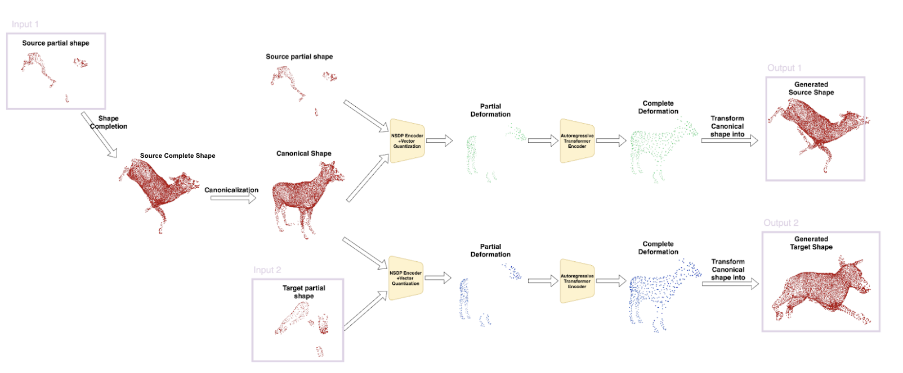
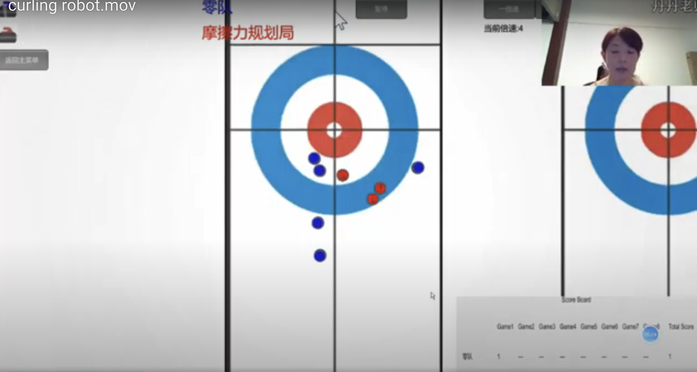
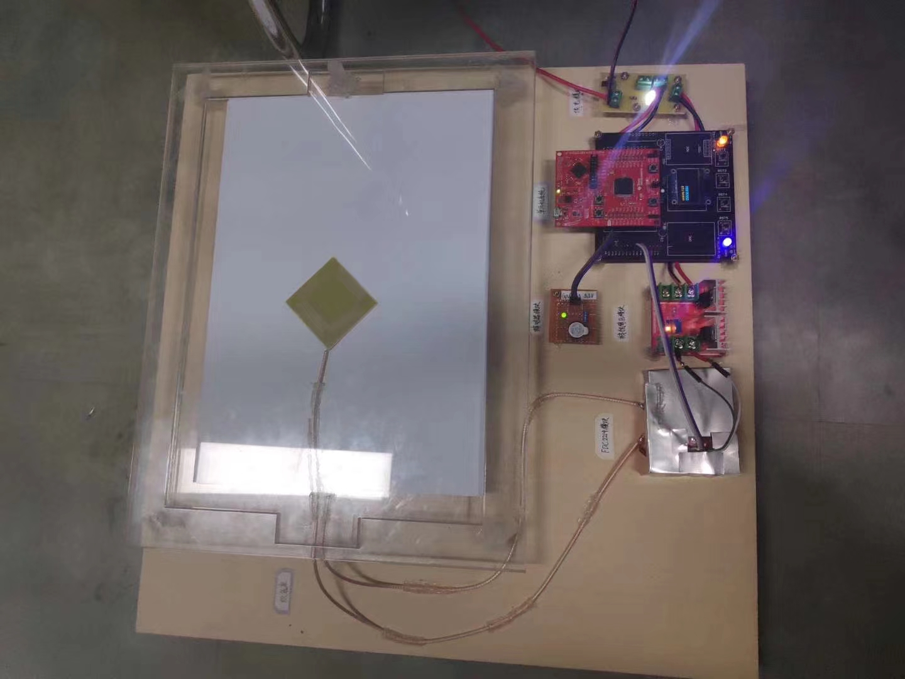
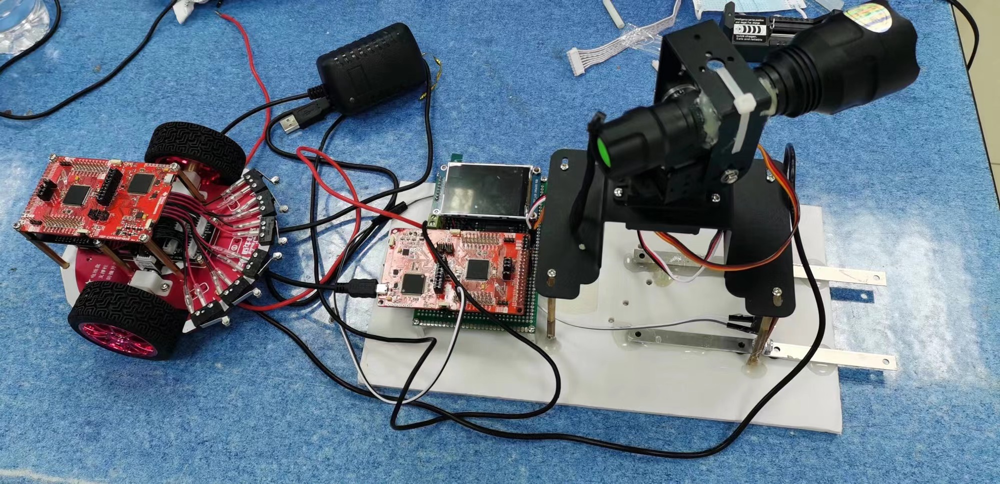

|

|
MessyKitchens: Contact-rich object-level 3D scene reconstruction
Junaid Ahmed Ansari*, Ran Ding*, Fabio Pizzati, Ivan Laptev
* Co-first authors
arXiv, 2026
page /
paper
Monocular 3D scene reconstruction has recently seen significant progress, but reconstructing cluttered scenes into physically plausible 3D objects with accurate contacts remains challenging. We introduce MessyKitchens and a Multi-Object Decoder to improve object-level scene reconstruction with better registration accuracy and inter-object penetration.
|
|

|
3D-Aware Diffusion Policy for Coverage Path Planning
Chenyuan Chen, Haoran Ding, Ran Ding, Tianyu Liu, Zewen He, Anqing Duan, Yoshihiko Nakamura
arXiv, 2026
3D-CovDiffusion introduces a 3D-aware diffusion policy for coverage path planning, aiming to improve coverage behavior through stronger 3D geometric understanding.
|
|

|
TARGO: Benchmarking Target-driven Object Grasping under Occlusions
Ran Ding*, Ziyuan Qin*, Yan Xia*†, Guanqi Zhan, Kaichen Zhou, Long Yang, Hao Dong, Daniel Cremers
* Co-first authors, † Corresponding author
International Journal of Computer Vision, 2026
page /
paper
This paper presents TARGO, a benchmark dataset for target-driven grasping under occlusions in cluttered environments, along with TARGO-Net to improve grasping performance in these settings.
|
Mentors & Collaborators
I have also learned a lot from my peers and mentors, including Chenyuan Chen (MBZUAI), Ziyuan Qin (TUM), Yan Xia (USTC), Junaid Ansari (MBZUAI), Shuangpeng Wu (ZJU), Guanqi Zhan (NVIDIA), Barry Shichen Hu (TUM), Hao Dong (PKU), and Fenghua Yang (UMich).
|
Projects
It covers computer vision, robotics, and multimodal learning.
|
|

|
Unsupervised Multi-View Stereo with Neural Radiance Field
3D Computer Vision Project at TUM Visual Computing & Artificial Intelligence Lab, 2022
report /
slide
We extended Neural Radiance Field for multi-view stereo and trained it in an unsupervised manner to resolve view correspondence ambiguity.
|
|

|
Deformation Generation via Autoregressive Models
Reseach Internship at TUM Visual Computing & Artificial Intelligence Lab, 2023
slide
Given partial deformation, we applied a decoder-only transformer to autoregressively generate diverse and complete deformation.
|
|

|
Chinese Undergraduate Curling AI Challenge
Robotics Project at DUT Embedded Intelligent System Lab, 2020
video
We refined motion strategies for a curling robot and implemented a neural network regression model to predict the relationship between robot velocity and current position.
|
|

|
National Undergraduate Electronic Design Contest Liaoning Division
Embedded System Design Project at DUT Embedded Intelligent System Lab, 2019
report
We developed a paper counting device using least squares fitting to correlate paper quantity and capacitance measurements from the FDC2214 sensor.
|
|

|
National Undergraduate Electronic Design Contest
Robotics Project at DUT Embedded Intelligent System Lab, 2020
album
We developed a target tracking system that controls a vehicle to follow a predefined path and parses data exchanged with a millimeter-wave radar.
|
Awards
- Allianz Scholarship (33,600 Euros, awarded to 8 top students nationwide in Germany), Oct 2022
- National Third Prize in National Undergraduate Electronic Design Contest, Sep 2020
- National Second Prize in Chinese Undergraduate Computer Design Contest - AI Challenge, Aug 2020
- National Second Prize in Chinese Undergraduate Curling AI Challenge, Jul 2020
|
|